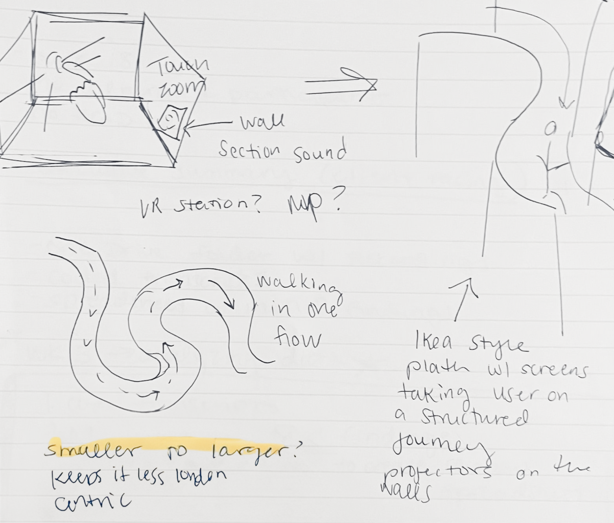

We had a problem statement, a framework, and a collection of field observations. What we didn't have yet was the idea: the organizing logic that would give our exhibit a shape and a story. How we got there was, in part, through sketching.
Sketching as a Creative Tool
Sketching as a creative practice has been one of the biggest takeaways for me from this module. I have some prior experience with fine arts (Studio Art minor in undergrad), but I hadn't picked up my sketchbook in years. Richard Banks' lecture on his design practice and the role of sketching inspired me to pick it up again. I wanted to challenge myself to not aim for something polished, but just work on externalizing ideas and thinking with my hands.

Micro to Macro — Early SketchSo on the bus home after one of our team meetings, I took out my notebook and just started drawing some very messy, barely comprehensible sketches, and somewhere in those scrawls, an idea surfaced: what if the exhibit started at the smallest possible scale (DNA, microorganisms) and then gradually zoomed out, room by room, to the garden, then to London, then to the global picture? Micro to macro.
Defining the Concept
The next time our team met, we sat down to formalize our exhibit concept using the brief, our field observation notes, and the Smithsonian framework as a guide. We locked in the type of exhibit, our target audience, our purpose statement, and our main message.
| Framework | Our Decision |
|---|---|
| Type of Exhibit | Permanent and research led |
| Target Audience | International visitors |
| Purpose Statement | To propose a novel way for visitors to interact with the NHM's ecological data |
| Main Message | Changes in these gardens are representative of larger changes in the world |
When it came to narrative organization, I shared the micro to macro idea from my sketch, and it fit. International visitors aren't necessarily interested in one garden in South Kensington, but they are interested in what that garden says about the planet they live on. The structure gave our exhibit a reason to exist beyond the museum's walls.
Sketching will be a tool that myself and my teammates continue to use throughout the process. More on that in the next post.